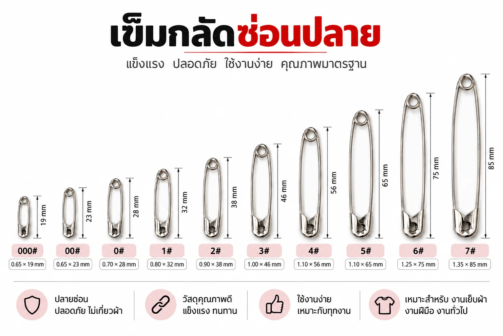

คู่มือฉบับร้านค้าส่งสำเพ็ง
เข็มกลัดเบอร์ไหนใช้ทำอะไร? คู่มือเลือกขนาด 000–7
เข็มกลัดซ่อนปลายในตลาดไทยมี 10 เบอร์ ตั้งแต่เบอร์จิ๋ว 000 (1.9 ซม.) ถึงเบอร์ยักษ์ 7 (8.5 ซม.) — เลขยิ่งมากยิ่งยาว หลักการเลือกง่ายมาก: ดูจากงานที่จะใช้ก่อน แล้วค่อยดูขนาด บทความนี้สรุปให้จบในตารางเดียว
กฎจำง่าย
— งานแท็ก/ป้ายเล็กใช้เบอร์เล็กสุดที่กลัดไหว (000–00) · งานเสื้อผ้าใช้กลาง (0–2) · งานผ้าหนาใช้ 3–4 · งานผ้าใบ/กลางแจ้งใช้ 5–7

เลือกจากงานที่จะใช้
| งานที่จะใช้ | เบอร์ที่เหมาะ | เหตุผล |
|---|---|---|
| ติดป้ายราคา / แท็กเครื่องประดับ | 000 | เล็กสุด เนียนไปกับสินค้า ลวดบาง 0.65 มม. — คู่มืองานแท็ก |
| ติดป้ายเสื้อผ้า / งาน OEM โรงงาน | 00 | มาตรฐานวงการเสื้อผ้า แข็งแรงกว่า 000 |
| ซักรีด / โรงแรม / ใช้ทั่วไปในบ้าน | 0–1 | ขนาดกลาง กลัดผ้าแน่นแต่ไม่ทำลายเนื้อผ้า |
| ร้อยยางยืดขอบกางเกง | 1 / 3 | เบอร์ 1 สำหรับยางเส้นเล็ก เบอร์ 3 สำหรับยางหน้ากว้าง |
| กลัดเบอร์วิ่ง (BIB) / ชุดนักเรียน / ป้ายชื่อ | 2 | มาตรฐานงานวิ่ง ใช้ 4 ตัว/คน — คู่มือผู้จัดงานวิ่ง |
| ควิลท์ / ผ้านวม / ยีนส์ | 3 | ยาวพอทะลุผ้าหลายชั้น |
| ผ้าอ้อมเด็ก / ผ้าห่ม / ผ้าขนหนู | 4 | เข็มกลัดผ้าอ้อมมาตรฐาน (blanket pin) — คู่มือผ้าอ้อม |
| งานเวที / ผ้าม่าน / คอสเพลย์ | 5 | กลัดผ้าหลายทบอยู่ ถอดไวหลังจบงาน |
| ผ้าใบกันแดด / ตาข่าย / กระสอบ | 6–7 | เข็มใหญ่รับแรงดึงงานกลางแจ้ง — คู่มืองานผ้าใบ |
| พวงกุญแจ / งานคราฟต์ / ตกแต่งร้าน | 7 | เข็มกลัดยักษ์ 8.5 ซม. ลวดหนา 1.35 มม. เห็นชัด จับถนัด |
ไล่ดูทีละเบอร์ (คลิกดูสเปคเต็ม)

วิธีวัดขนาดเข็มกลัดที่ถูกต้อง
วัดความยาวรวมจากปลายหัวฝาถึงปลายขดสปริง (ไม่ใช่เฉพาะตัวเข็ม) ตัวเลขของผู้ผลิตแต่ละเจ้าอาจต่างกัน ±2–3 มม. — ถ้าเคยใช้ของเดิมอยู่แล้วและต้องการขนาดเท่าเดิมเป๊ะ ถ่ายรูปเทียบไม้บรรทัดส่งมาทาง LINE ให้ทีมงานเทียบเบอร์ให้ได้เลย
เกร็ดชื่อเรียก: เบอร์ 2/0 คือเบอร์ 00 และ 3/0 คือเบอร์ 000 (ชื่อเรียกต่างกันแต่ตัวเดียวกัน) ส่วนหน่วยค้าส่ง 1 พวง = 12 ตัว, 1 กุรุส = 144 ตัว — ดูตารางขนาดฉบับเต็ม
เลือกเบอร์ได้แล้ว? ดูจำนวนต่อกล่องและราคาส่งทุกเบอร์ →
ยังไม่ชัวร์ว่าเบอร์ไหน? ส่งรูปงานมาถามได้
ทีมงานสำเพ็งเทียบเบอร์ให้ฟรี พร้อมแจ้งราคาปลีก-ส่งทันที